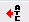
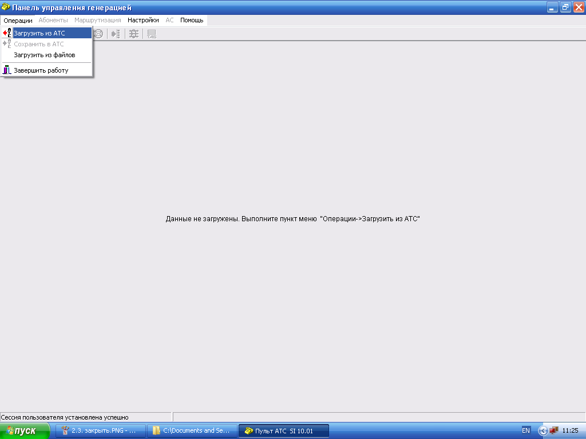
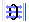
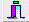
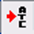

Логин admin пароль padmin Провести чтение данных из АТС.
Перед началом работы с окнами подменю Генерация необходимо предварительно сохранить существующую конфигурацию АТС на диск ПЭВМ пульта оператора.
Рекомендуется сохранять конфигурацию всей станции нажав клавишу
Сохранить. В процессе сохранения данных в нижнем поле окна будет выведен
отчет. После успешного завершения работы следует нажать кнопку Закрыть.
После чего станет доступно окно Панель управления генерацией.
Порядок работы в меню Генерация для всех режимов, описанных ниже,
следующий:
Прочитать данные из АТС можно нажав кнопку «» (загрузка из АТС) в горизонтальном ряду панели инструментов окна Панель управления генерацией, либо в подменю Операции выбрать режим Загрузить из АТС;

Процесс загрузки данных отображается в окне Чтение данных из АТС.
После загрузки данных отобразится окно Лог событий, в котором дается
информация о результатах загрузки. Информацию, выведенную в окне, можно
сохранить в текстовый файл с помощью кнопки (сохранить).
После закрытия окна Лог событий происходит загрузка баз данных, которую
можно проследить в информационном окне Загрузка БД.
После выхода из данного в окне Панель управления генерацией будут
активированы все инструменты управления.
В панели управления генерацией зайти в меню «Маршрутизация» - «Пучки» и
выбрать соответствующее направление. Открыть окно «Характеристика
пучка», настроить сигнализацию соединения. Нажать кнопку «Принять» и
загрузить данные в АТС.
Для этого необходимо выбрать закладку Пучки, входящие в направление и
нажать кнопку «».
В результате, выбрав пучок КОМПАЗИТ, мы можем убедится, что ему
приписаны каналы.
Двойное нажатие на пучке вызывает окно Характеристика пучка, в котором
соответственно необходимо задать характеристики пучка.
В предлагаемых списках выбираем необходимые параметры.
В зависимости от выбранного типа пучка заполняются параметры в закладках
Характеристики входящего пучка или Характеристика исходящего пучка.
Сохранить данные кнопкой(). Выйти из окна, нажав кнопку().
Запись вновь созданных данных можно производить несколькими способами.
При полном завершении процесса внесения изменений в конфигурацию АТС
необходимо загрузить данные в станцию путем нажатия кнопки () на горизонтальном ряду панели инструментов основного окна Панель
управления генерацией. Только после этого обновленная версия ПО вступит
в силу, а данные в самой АТС будут соответствовать данным, отображаемым
в пульте оператора.
Аналогичная кнопка «» присутствует в каждом окне, предназначенном для конфигурирования,
что позволяет загружать данные в АТС не по окончании работ, а поэтапно,
по мере внесения корректив в ПО.
Если по каким-либо причинам вы не хотите загружать новые данные в
станцию, то необходимо восстановить отображение прежней конфигурации АТС
на пульте оператора. Для этого нажмите кнопку «» (загрузить данные из станции).